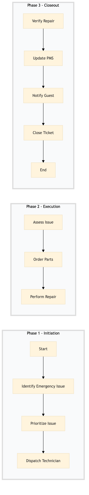

| Role | Steps |
|---|---|
| Facilities & Engineering Technician | 1.1 2.1 2.3 3.1 |
| Facilities & Engineering Manager | 1.2 1.3 2.2 3.2 3.4 |
| Front Desk Agent | 3.3 |
| Step | Name | Role | System | Input | Output | KPI | Dec? | Exc? | Pain Point / Risk |
|---|---|---|---|---|---|---|---|---|---|
| 1.1 | Identify Emergency Issue | Facilities & Engineering Technician | Oracle OPERA Cloud | Guest report or technician observation | Emergency repair ticket in Oracle OPERA Cloud | Less than 5 minutes | N | Y | Delays in reporting issues can lead to prolonged guest discomfort. |
| 1.2 | Prioritize Issue | Facilities & Engineering Manager | Oracle OPERA Cloud | Emergency repair ticket | Priority level assigned to the ticket | Less than 3 minutes | Y | N | Incorrect prioritization can lead to inefficient resource allocation. |
| 1.3 | Dispatch Technician | Facilities & Engineering Manager | Oracle OPERA Cloud, Birchstreet Procurement | Prioritized ticket | Technician dispatched with necessary tools and parts | Less than 10 minutes | N | Y | Delays in dispatch can prolong the repair time. |
| 2.1 | Assess Issue | Facilities & Engineering Technician | Oracle OPERA Cloud, IBM Maximo | Dispatched to site | Detailed assessment report | Less than 15 minutes | Y | N | Inaccurate assessments can lead to ineffective repairs. |
| 2.2 | Order Parts | Facilities & Engineering Manager | Birchstreet Procurement, Oracle OPERA Cloud | Assessment report | Parts order confirmation | Less than 30 minutes | N | Y | Delays in part delivery can extend repair times. |
| 2.3 | Perform Repair | Facilities & Engineering Technician | Oracle OPERA Cloud, IBM Maximo | Parts and tools | Repair completion report | Less than 1 hour | Y | N | Suboptimal repair techniques can lead to recurring issues. |
| 3.1 | Verify Repair | Facilities & Engineering Technician | Oracle OPERA Cloud, IBM Maximo | Repair completion report | Verification report | Less than 20 minutes | Y | N | Inadequate verification can result in unresolved issues. |
| 3.2 | Update PMS | Facilities & Engineering Manager | Oracle OPERA Cloud | Verification report | Updated repair status in Oracle OPERA Cloud | Less than 5 minutes | N | Y | Outdated PMS information can lead to confusion. |
| 3.3 | Notify Guest | Front Desk Agent | Oracle OPERA Cloud, Marriott Bonvoy CRM | Updated repair status | Guest notification | Less than 10 minutes | N | Y | Lack of communication can cause guest dissatisfaction. |
| 3.4 | Close Ticket | Facilities & Engineering Manager | Oracle OPERA Cloud, IBM Maximo | Guest notification confirmation | Closed repair ticket | Less than 5 minutes | N | Y | Open tickets can lead to ongoing concerns. |
This process outlines the emergency repair response procedure at a Marriott full-service hotel, ensuring quick and efficient resolution of facility issues that impact guest comfort and safety.